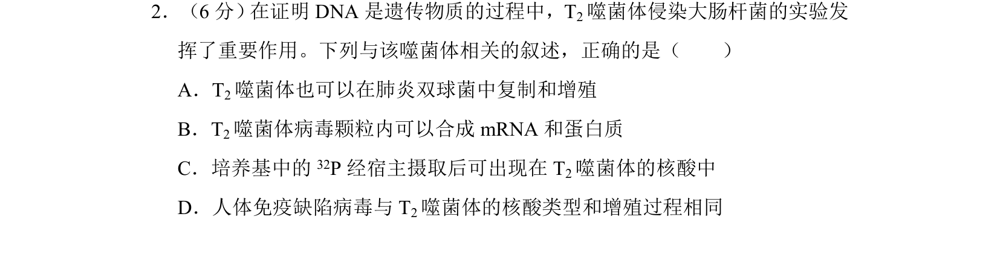
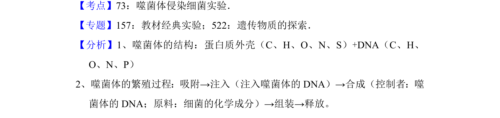

考点：噬菌体 核酸 增殖 实验分析

该题考查T2噬菌体侵染大肠杆菌实验的相关叙述正误判断。

📄 原 PDF 第 2 页：
素材/真题/吉林/2008-2024·（吉林）生物高考真题/2017年高考生物试卷（新课标Ⅱ）（解析卷）.pdf
2．（6分） 在证明DNA是遗传物质的过程中，T2噬菌体侵染大肠杆菌的实验发 挥了重要作用。下列与该噬菌体相关的叙述，正确的是（ ） A．T2噬菌体也可以在肺炎双球菌中复制和增殖 B．T2噬菌体病毒颗粒内可以合成mRNA和蛋白质 C．培养基中的 32P经宿主摄取后可出现在T 2噬菌体的核酸中 D．人体免疫缺陷病毒与T 2噬菌体的核酸类型和增殖过程相同
【考点】73：噬菌体侵染细菌实验．菁优网版权所有 【专题】157：教材经典实验；522：遗传物质的探索． 【分析】1、噬菌体的结构：蛋白质外壳（C、H、O、N、S）+DNA（C、H、 O、N、P） 2、噬菌体的繁殖过程：吸附→注入（注入噬菌体的DNA）→合成（控制者：噬 菌体的DNA；原料：细菌的化学成分）→组装→释放。